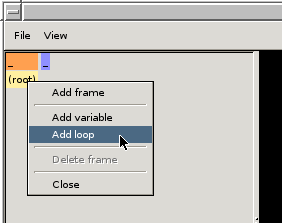
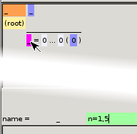
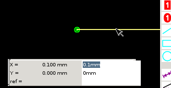
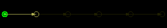
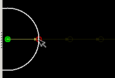

Fped GUI Manual
This manual introduces the basic concepts of Fped and explains the elements
of the graphical user interface. Please refer to the file
README for more
technical details and a discussion of the scripting language used by fped.
Objects and instances
Footprints tend to be highly repetitive, with many pads placed in a
simple geometrical pattern. With fped, the user specifies the elements
to repeat and the way they are repeated. Fped then generates the
repetitions automatically.
Hands-on example
Here is a simple example that illustrated the basic steps of constructing
things with fled:
- Start fped without a command-line argument.
- Right-click on the yellow field that says "(root)" and select
"Add loop". An entry saying "_ = 0 ... 0 (0)" appears next to the
yellow field.

- Click on the underscore, type n=1,5 and press Enter.
The entry should now show "n = 1 ... 5 (1 2 3 4 5)"

- Click on the dark-yellow vector icon on the right-hand side.
A red frame shows that it is selected.
- Move the mouse pointer to the green dot in the middle of the
black canvas. A red circle appears when the pointer is over the
dot.
- Press the left mouse button, drag a little to the right, and
release the mouse button. A white line appears and changes
to dark yellow after the button is released.
- Click on the yellow line. It is now shown in bright yellow and
a number of text entry fields appear below the canvas.

- Click into the field on the top that probably says "0.1mm",
change it to n*1mm and press Enter.
- Select "Zoom all" from the "View" drop-down menu. The canvas
should now show the green dot on the left, with a yellow arrow
pointing to the right, and four more even darker arrows following
that arrow.

- Click on the icon depicting a light-blue circle.
- Move the mouse pointer over the green dot, then drag to the
circle at the end of the vector, and release the mouse button.
A series of partial circles should appear.

- Select "Zoom all" again to show the full circles.

The graphical items you have entered are a vector and a circle with the
radius determined by the vector. We call these items "objects". Furthermore,
you have defined a variable that gets set to the values from 1 to 5, in
increments of one. Fped had repeatedly drawn the objects for each such
value. We call the item that have been drawn "instances".
The innermost vector and circle are highlighted. You can highlight other
instances of the same objects by clicking on the numbers (1 2 3 4 5) shown
next to the loop.
Conceptual view
The following picture illustrates the concept: the model is defined in
terms of objects, in this case a vector from the origin to the circle's
center, a vector for the radius, and the circle itself.

The vector to the center uses a variable that gets iterated through the
values 0, 1, and 2. For each iteration, an instance is generated.
Only the instances of silk screen objects and pads are exported to KiCad.
Elements used for construction, such as vectors, only appear in fped.
Frames
Frames serve various purposes:
- To structure the footprint drawing by grouping like elements.
For example, one may want to place pads, outline, and the keep-out
area in different frames, and probably subdivide some of those
constructs even further.
- To define an element that is used in several places. For example,
a pad.
- To define a repetition through a loop or a table.
- To set variables for child frames.
At the bottom of the hierarchy, we have the root frame. To add another
frame, right-click on the root frame's label "(root)" and select "Add
frame".
To be able to put items into the new frame, it has to be attached to
the root frame (or to any other frame that's attached). This is called a
frame reference. First, we need a place to attach it to. This
can be the origin of its parent frame or it can be the end of a vector
in the parent frame. To create the frame reference, do this:
- Click on the parent frame to select it.
- Press the left mouse button on the frame you wish to reference
and drag it (move the mouse pointer while keeping the left button
pressed) into the canvas. When dragging, the mouse cursor changes
to show a hand.
- When the mouse pointer is above a suitable point of attachment,
the point of attachment is highlighted with a red circle and the
mouse cursor changes to show a hand with a plus sign.
- At the desired location, release the mouse button.
If you wish to cancel the operation, simply release the mouse button at
any place that isn't a point of attachment.
Variables
Iconography
The right-hand side of the fped window shows the component being drawn on a
black background. We call this the canvas. It is surrounded by a toolbar on
the right side and a few buttons with visibility options at the top.
The canvas
Blue screen
When an expression uses an unknown variable or evaluates to an incorrect
value (e.g., a bare number where a dimension is expected), the
instantiation fails. Fped indicates this by changing the background color
of the canvas from black to blue. The cause of the failure is explained
in the status bar at the bottom.
In this state, the canvas is no longer updated when making changes until
the problem has been resolved. The most common causes are a misspelt
variable name in an expression, the use of a number without unit where a
dimension is expected, or the removal of a variable that's still used
somewhere.
If the location of the error is not obvious, the list of objects can be
shown by selecting "Swap var&code" from the View menu. The object
in which the error occurred is shown in red. If the error occurred in a
loop variable, the variable name is shown in red.
Visibility options
When working on a complex component, the number of elements shown can be
overwhelming. The visibility options help to quickly hide irrelevant
details and get one's bearings. They are located in the menu bar at the
top.


- Show all frames. If disabled, only show the currently active frame.


- Show vectors and frames.


- Show measurements.


- Highlight the elements that will be exported to KiCad, i.e.,
the pads and the silk screen drawings. To show the component
exactly as it will appear in KiCad, also turn off vectors,
frames, and measurements.
The visibility options can be combined.
Tools
Tools are used to add new elements and to manipulate existing ones.

- The pointer. This is the default tool. The pointer is used to
select items and do move points of the selected item.
Clicking on an item selects it. If items overlap, the one with the
highest priority is selected. The priority is based on how difficult
it usually is to select an item, with frame references having a low
priority, pads, circles, arcs, rectangles, measurements, and lines
having increasingly higher priorities. There are a few special cases:
- The circle at the end of a vector has the highest priority
while its line has the lowest priority.
- To select a frame reference, click on the L-shaped upper left
corner.
- To select a measurement, click on the line with the text, not
the (hypothetical) line connecting the points being measured.
If multiple items are under the mouse pointer, repeatedly clicking
iterates through them.
To move points, select the item, then move the mouse pointer over
the point to move. A red circle will appear under the mouse pointer.
Then drag the point to its new location and release the mouse button.


- Delete the currently selected item. Whenever an item is selected,
the delete icon lights up. Clicking the icon deletes the item.
To undelete the item, press U.

- Add a vector. To add a new vector, move the mouse pointer to the
new vector's starting point then drag towards the desired end point.
Vectors are normally specified via parameters. To enter the parameters,
click on the new vector.
Note that the starting point of the vector has to be in the same
frame as the vector being drawn. This limitation also applies to
points defining pads and silk-screen items.


- Add a pad. Pads are either rectangular or rounded. They are
defined by two points which are opposite corners of the rectangle
containing the pad. Move the mouse cursor to the first point, then
drag to the second point. The pad's name can be edited after selecting
the pad.


- Add a line or a rectangle. Similar to pads, lines and rectangles
are defined by two points. The width of the line can be edited after
selecting the line or rectangle.

- Add circle or arc. Circles are defined by their center end a
point at their radius. An arc has a third point, which defines the
angle at which the arc ends. If this third point is not located on
the radius, the arc ends where an imaginary line between the center
and the end point would intersect with the radius.
An arc is made by first drawing a circle with the radius point at
the location where the arc should start. Then click and hold the
radius point to drag the end point to the desired location.
To change the radius point of a circle, first drag the end point,
then drag the radius point itself to that same location.
-


- Add a measurement. Measurements show the distance between points.
They can either measure diagonally or only horizontally or only vertically.
Unlike other items, measurements are not limited to points in the same
frame. Instead, they operate on the minimum, maximum, and next greater
coordinates of instances of objects.
A measurement is added as follows:
- Click on one of the three measurement icons to select the
measurement type. All possible endpoints are highlighted.
- Drag from the desired starting point. Now all the endpoints
available for this starting point are highlighted.
- Drag to the endpoint and release the mouse button. The measurement
will now appear as a double-headed arrow and text between the two
points (if this is a diagonal measurement) or extending vertically or
horizontally from one of the two points.
- To move the measurement arrow away from the two points, select
the measurement and set an offset.
Sometimes, the second point becomes unavailable after selecting the
first point. This means that the two points are not a minimum or maximum,
or a minimum and the next greater neighbour. In this case, just try
another pair of points measuring the same distance.
Keyboard shortcuts